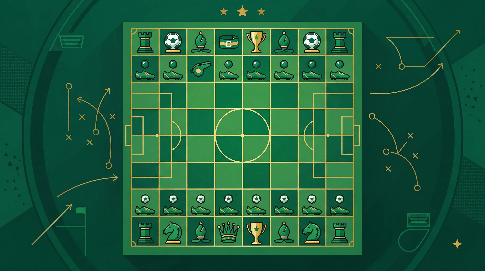

Accumulator Strategies That Work
Building a football accumulator is easy. Building one that stands a genuine chance of landing takes more thought. This guide covers the strategies that experienced acca bettors use to improve their hit rate and protect their bankroll over time.
Keep It Short
The single biggest improvement most acca bettors can make is to reduce the number of legs. A three or four-fold acca is dramatically easier to land than a seven or eight-fold, and the combined odds can still be very attractive. Going from a four-fold to a six-fold roughly halves your probability of winning, while only increasing your potential payout by a fraction.
The sweet spot for most punters is a four-fold. Four well-researched picks, three or four strong favourites, and you are looking at combined odds of around 6/1 to 12/1 - enough to be exciting, manageable enough to land regularly.
Do Not Rely on Big Favourites Alone
It is tempting to stack an acca full of short-priced favourites - 1.30, 1.25, 1.20 - and assume they will all win. But even 1.25 shots lose roughly one in five times, and with four such selections in your acca, the chance of all four winning is lower than it appears. Short-priced favourites also give you very little combined payout for the risk.
A better approach is to use one or two stronger favourites (1.50-1.80) combined with a couple of selections at slightly longer odds (2.00-2.50). This improves your combined odds meaningfully while keeping the selections reasonable.
Research Form and Context
Never add a team to an accumulator without checking the basics: recent form over the last five matches, home/away record, injury news, and whether there is any motivation to win. A big club resting players before a cup final is not the same as that club playing at full strength in a title run-in.
Our win accumulator tips are researched each morning with these factors in mind. You can also cross-reference with our BTTS tips and Over 2.5 goals tips for additional markets.
Use the Same Bookmaker for All Legs
While line shopping across bookmakers is great for singles, for accumulators it is simpler to place the whole bet with one bookmaker. This makes it easier to track, claim acca insurance if offered, and receive any acca boost bonus. That said, compare the odds on each selection before committing - even small differences in odds make a meaningful impact when multiplied across four or five legs.
Exploit Acca Insurance
If you regularly place accas, prioritise bookmakers that offer acca insurance. A typical acca insurance deal refunds your stake as a free bet if exactly one leg lets you down. On a four-fold, having that safety net changes the bet significantly. Read our acca insurance explained guide for more on this.
Mix Markets Intelligently
A mixed acca - combining match results with BTTS or Over/Under selections - can sometimes offer better value than a pure win accumulator. Markets like BTTS Yes tend to be more predictable in attacking matches, and both teams scoring does not require you to correctly pick the winner.
Manage Your Bankroll
Because accumulators have a low strike rate, it is easy to run through your betting budget quickly if you are placing large stakes. Keep acca stakes to a small, fixed percentage of your bankroll - many experienced bettors use 1-2% per acca. Our bankroll management guide covers this in detail.
Track Your Results
The only way to know whether your acca strategy is working is to keep records. Log every acca: the selections, the stake, the combined odds and the outcome. Over time you will spot patterns - perhaps you are consistently doing well on certain leagues or markets, and poorly on others. That information is valuable.